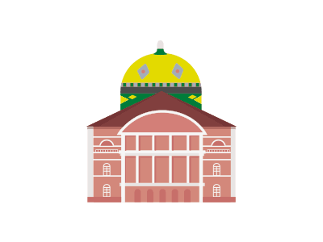

Visitante interessado em museus
“Quais museus posso visitar em Manaus neste fim de semana e quais são os horários de funcionamento?”

Planejamento do Site
Tudo sobre a cultura de Manaus em um só lugar.
Planejamento
Este documento apresenta a proposta, a identidade visual e a estrutura planejada para o site Agenda Cultural de Manaus, que pretende reunir informações culturais da cidade em um só lugar.
O nome é simples e fácil de entender. Ele comunica a proposta do site: reunir informações sobre eventos e atividades culturais disponíveis em Manaus.
O site Agenda Cultural de Manaus tem como objetivo centralizar e divulgar informações sobre atividades e espaços culturais disponíveis na cidade de Manaus. A plataforma permitirá que seus visitantes encontrem museus que podem ser visitados e acompanhem a programação mensal dos teatros, incluindo o Teatro Amazonas e o Teatro Manauara.
A proposta é tornar mais simples descobrir lugares para visitar, apresentações para assistir e atividades culturais para aproveitar na cidade. O site pretende funcionar como um guia cultural acessível, organizado e atualizado, incentivando a população a conhecer e valorizar a cultura manauara.
Os cenários representam perguntas que visitantes do site podem fazer e ajudam a orientar quais informações devem estar disponíveis.
“Quais museus posso visitar em Manaus neste fim de semana e quais são os horários de funcionamento?”
“Quais apresentações estarão acontecendo este mês no Teatro Amazonas e no Teatro Manauara, e quanto custam os ingressos?”
“Estou em Manaus e quero conhecer lugares culturais da cidade. Onde posso encontrar exposições, espetáculos ou experiências culturais?”
As cores remetem ao Teatro Amazonas que é rosa e na sua cúpula tem uma representação da bandeira do Brasil a qual destacamos o verde no site. As cores mais claras e o cinza servem para criar contraste para que os textos tenham melhor vizualização.
#174C3C
Header, títulos, menu e botões principais.
#BA165A
Destaques, datas, detalhes, ícones e chamadas.
#FFFFFF
Cards e áreas de leitura sobre fundos coloridos.
#F4F1ED
Fundo geral das páginas.
#333333
Texto principal em fundos claros.
Explore museus, exposições e espetáculos disponíveis na cidade.
Serão utilizadas duas fontes para manter uma leitura confortável.
Títulos, nome do site e chamadas especiais.
ABCDEFGHIJKLMNOPQRSTUVWXYZ
abcdefghijklmnopqrstuvwxyz
Parágrafos, navegação, botões, descrições, datas e informações.
ABCDEFGHIJKLMNOPQRSTUVWXYZ
abcdefghijklmnopqrstuvwxyz
Os wireframes abaixo representam a estrutura da página inicial, indicando a posição e relação entre as áreas principais.
Layout em uma coluna, menu compacto e cards empilhados para facilitar a navegação em telas pequenas.
Layout com navegação horizontal, seções mais amplas e cards distribuídos em colunas.
index.htmlApresentação do site, destaque para a programação do mês, eventos dos teatros e sugestões de museus para conhecer.
museus.htmlLista de museus de Manaus, imagens, descrição, localização, horários de funcionamento e informações úteis para visitantes.
programacao.htmlEventos do mês atual separados por local, com datas, descrições e links para informações ou ingressos quando disponíveis.